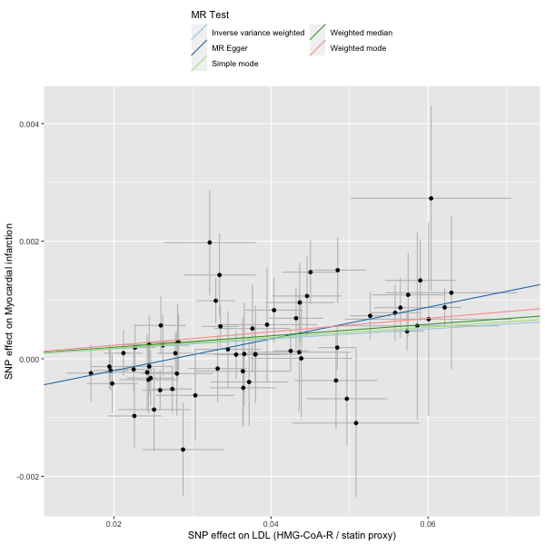
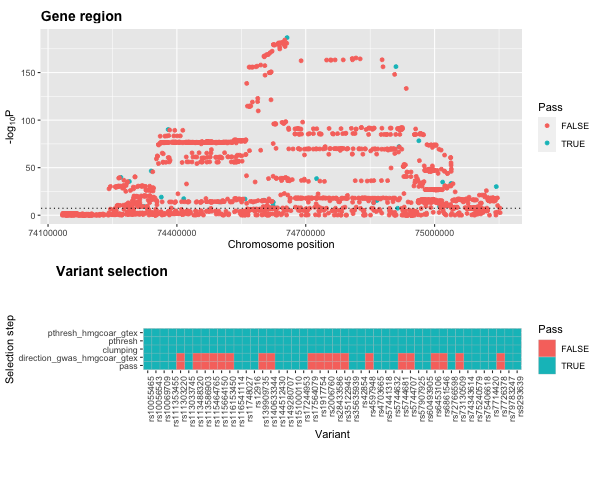
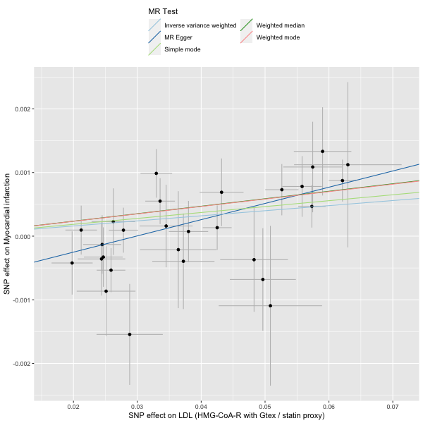
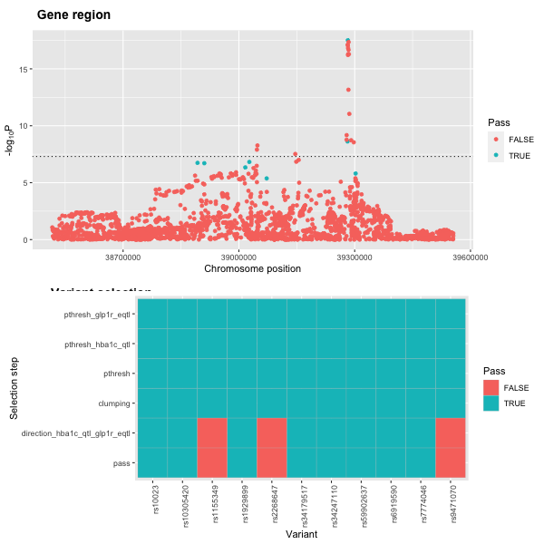
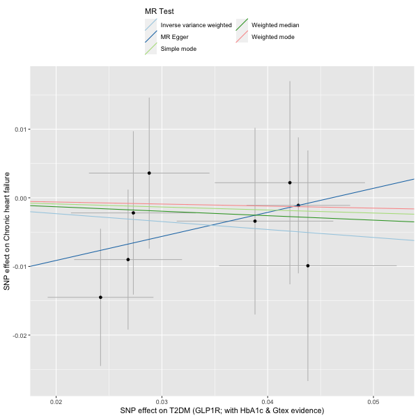

drug_target_proxy.RmdDrug targets can be genetically proxied by using variants within a gene region combined with other evidence of functional relevance. More example, variants in the target of statin therapy, HMG-CoA-reductase, can be used to investigate the potential benefits of statin therapy on outcomes such as heart attacks. Of course there is a lot of clinical trial data regarding this specific scenario, however the formulation of the problem can be extended to less well studies drugs and potential targets for which medication is yet to be developed for.
First we start by defining the gene region and obtaining the association statistics for the variants within it on the exposure of choice (here LDL cholesterol).
library(genepi.utils)
library(ieugwasr)
# HMG-CoA reductase gene plus flanking area
hmgcoar_chr <- 5
hmgcoar_start <- 74632154
hmgcoar_end <- 74657929
flanking <- 5e5
# IEU LDL GWAS id
ldl_gwas_id <- "ieu-b-110"
# LDL variants
gwas_ldl_hmgcoar <- associations(variants = paste0(hmgcoar_chr,":",hmgcoar_start-flanking,"-",hmgcoar_end+flanking), id=ldl_gwas_id)
# standardise
gwas_ldl_hmgcoar <- standardise_gwas(gwas_ldl_hmgcoar, "ieugwasr", drop=TRUE, build="GRCh37")Next we use the function
genepi.utils::drug_target_proxy() to define the variants
that will make up our instrument. In the simplest form, this takes the
exposure association statistics, the gene definition, and clumping
parameters, then returns significant, clumped, variants within the gene.
Later we will see how to provide other GWAS data and QTL data to further
refine the variants making up the drug-proxy instrument.
# extract the variants for the instrument
statin_instrument <- drug_target_proxy(gwas_ldl_hmgcoar,
gene_chr = "5",
gene_start = 74632154,
gene_end = 74657929,
gene_flanks = 5e5,
build = "GRCh37",
clump = TRUE,
clump_ref = which_1000G_reference("GRCh37"),
p1 = 5e-8,
r2 = 0.2,
kb = 250)
# take only those that pass the tresholding
statin_instrument <- statin_instrument[pass==TRUE, ]Assessing the instrument is the a case of running the MR of the instrument variants on the outcome of interest (here myocardial infarction).
library(TwoSampleMR)
# get myocardial infarction instruments
mi_instruments <- associations(variants = statin_instrument$RSID, id = "ukb-d-I9_MI")
# format statin instrument for TwoSampleMR
statin_instrument[, phenotype := "LDL (HMG-CoA-R / statin proxy)"]
hmgcoar_2SMR <- TwoSampleMR::format_data(statin_instrument |> as.data.frame(),
type = "exposure",
phenotype_col = "phenotype",
snp_col = "RSID",
beta_col = "BETA",
se_col = "SE",
eaf_col = "EAF",
effect_allele_col = "EA",
other_allele_col = "OA",
pval_col = "P",
id_col = "phenotype")
# format MI instrument for TwoSampleMR
mi_2SMR <- TwoSampleMR::format_data(mi_instruments,
type = "outcome",
phenotype_col = "trait",
snp_col = "target_snp",
beta_col = "beta",
se_col = "se",
eaf_col = "eaf",
effect_allele_col = "ea",
other_allele_col = "nea",
pval_col = "p",
id_col = "id")
# harmonise
dat <- TwoSampleMR::harmonise_data(hmgcoar_2SMR, mi_2SMR)
# run MR
res <- mr(dat)
# plot
plot <- mr_scatter_plot(res, dat)
# view result
res
We can refine the drug-proxy instrument by provding other QTL data
supporting a role for the particular gene of interest. Here we create a
QTL() object and pass it to
thedrug_target_proxy() function. The QTL()
object is simply a (S3) container for a set of summary statistics and a
P-value threshold to apply. This is joined to the main gene association
statistics and common variants passing both P-value thresholding tests
are retained. Internally, the drug_target_proxy() function
ensures effects are harmonised prior to merging.
# extract eQTL data for the variants
hmgcar_eqtl <- QTL("/Users/xx20081/Documents/local_data/gtex_v8/gtex_v8_chr5.tsv.gz",
p_val=0.05,
join_key="RSID_b37")
data.table::setnames(hmgcar_eqtl$data, c("SNP_b38", "BP_b37"), c("SNP", "BP"))
hmgcar_eqtl$data[, CHR := as.character(CHR)]
# set the concordance for beta effects in LDL and HMGCoAR
concordance <- data.table::data.table("data_name_1" = c(""), data_name_2=c("hmgcoar_gtex"), concordant=c(TRUE))
# extract the variants for the instrument
statin_instrument_dat <- drug_target_proxy(gwas_gene = gwas_ldl_hmgcoar,
gene_chr = "5",
gene_start = 74632154,
gene_end = 74657929,
gene_flanks = 5e5,
build = "GRCh37",
clump = TRUE,
clump_ref = which_1000G_reference("GRCh37"),
p1 = 5e-8,
r2 = 0.2,
kb = 250,
join_key = "RSID",
QTL_list = list("hmgcoar_gtex"=hmgcar_eqtl),
concordance = concordance)
# plot
plot3 <- plot_drug_proxy_instrument(statin_instrument_dat, remove=c("gwas_pthresh", "clumping"))We can view the instrument assessment steps with the function
plot_drug_proxy_instrument().

# take only those that pass the tresholding
statin_instrument2 <- statin_instrument_dat[pass==TRUE, ]
# format new statin instrument for TwoSampleMR
statin_instrument2[, phenotype := "LDL (HMG-CoA-R with Gtex / statin proxy)"]
hmgcoar2_2SMR <- TwoSampleMR::format_data(statin_instrument2 |> as.data.frame(),
type = "exposure",
phenotype_col = "phenotype",
snp_col = "RSID",
beta_col = "BETA",
se_col = "SE",
eaf_col = "EAF",
effect_allele_col = "EA",
other_allele_col = "OA",
pval_col = "P",
id_col = "phenotype")
# harmonise
dat2 <- TwoSampleMR::harmonise_data(hmgcoar2_2SMR, mi_2SMR)
# run MR
res2 <- mr(dat2)
# plot
plot2 <- mr_scatter_plot(res2, dat2)
# view result
res2Evidence for statin therapy.

# GLP1R gene plus flanking area
glp1r_chr <- "6"
glp1r_start <- 39016574
glp1r_end <- 39055519
flanking <- 5e5
# standardise T2DM summary stats downloaded from Knowlegde Portal - transancestry, 2022
gwas_t2dm_glp1r <- standardise_gwas("/Users/xx20081/Downloads/DIAMANTE/DIAMANTE-TA.sumstat.txt.gz",
list(SNP="chrposID",CHR="chromosome(b37)",BP="position(b37)",EA="effect_allele", OA="other_allele", EAF="MR-MEGA_p-value_association", BETA="Fixed-effects_beta", SE="Fixed-effects_SE", P="Fixed-effects_p-value", RSID="rsID"),
drop=TRUE, build="GRCh37")
# UKBB HbA1c IEU GWAS id
hb1a1c_gwas_id <- "ebi-a-GCST90002244" # "ebi-a-GCST90014006" UKBB no EAF data
# extract HbA1c associations in the same region
gwas_hba1c_glp1r <- associations(variants = paste0(glp1r_chr,":",glp1r_start-flanking,"-",glp1r_end+flanking), id=hb1a1c_gwas_id)
# standardise
gwas_hba1c_glp1r <- standardise_gwas(gwas_hba1c_glp1r, "ieugwasr", drop=TRUE, build="GRCh37")
# create a QTL object for the HbA1c data
hba1c_qtl <- QTL(gwas_hba1c_glp1r, p_val=0.5, join_key="RSID")
# create an eQTL object for the GTexV8 data
glp1r_eqtl <- QTL("/Users/xx20081/Documents/local_data/gtex_v8/gtex_v8_chr6.tsv.gz", p_val=1, join_key="RSID_b37")
data.table::setnames(glp1r_eqtl$data, c("SNP_b38", "BP_b37"), c("SNP", "BP"))
glp1r_eqtl$data[, CHR := as.character(CHR)]
# set the concordance for beta effects in HbA1c and GLP1R - FALSE as high HbA1c should relate to less GLP1R expression
concordance <- data.table::data.table("data_name_1" = c("hba1c_qtl"), data_name_2=c("glp1r_eqtl"), concordant=c(FALSE))
# extract the variants for the instrument
incretin_instrument_dat <- drug_target_proxy(gwas_gene = gwas_t2dm_glp1r,
gene_chr = glp1r_chr,
gene_start = glp1r_start,
gene_end = glp1r_end,
gene_flanks = flanking,
build = "GRCh37",
clump = TRUE,
clump_ref = which_1000G_reference("GRCh37"),
p1 = 5e-6,
r2 = 0.2,
kb = 250,
join_key = "RSID",
QTL_list = list("hba1c_qtl"=hba1c_qtl,
"glp1r_eqtl"=glp1r_eqtl),
concordance = concordance)
# plot
plot3 <- plot_drug_proxy_instrument(incretin_instrument_dat, remove=c("gwas_pthresh", "clumping"))
# take only those that pass the tresholding
incretin_instrument <- incretin_instrument_dat[pass==TRUE, ]
# get heart failure infarction instruments
hf_instruments <- associations(variants = incretin_instrument$RSID, id = "ebi-a-GCST90018806")
# format MI instrument for TwoSampleMR
hf_2SMR <- TwoSampleMR::format_data(hf_instruments,
type = "outcome",
phenotype_col = "trait",
snp_col = "target_snp",
beta_col = "beta",
se_col = "se",
eaf_col = "eaf",
effect_allele_col = "ea",
other_allele_col = "nea",
pval_col = "p",
id_col = "id")
# format new incretin instrument for TwoSampleMR
incretin_instrument[, phenotype := "T2DM (GLP1R; with HbA1c & Gtex evidence)"]
glp1r_2SMR <- TwoSampleMR::format_data(incretin_instrument |> as.data.frame(),
type = "exposure",
phenotype_col = "phenotype",
snp_col = "RSID",
beta_col = "BETA",
se_col = "SE",
eaf_col = "EAF",
effect_allele_col = "EA",
other_allele_col = "OA",
pval_col = "P",
id_col = "phenotype")
# harmonise
dat3 <- TwoSampleMR::harmonise_data(glp1r_2SMR, hf_2SMR)
# run MR
res3 <- mr(dat3)
# plot
plot5 <- mr_scatter_plot(res3, dat3)
# view result
res3